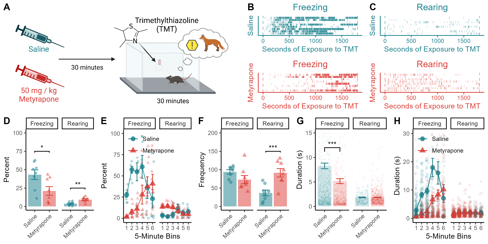

Figure 3: A 30-Minute TMT Exposure

Figure 3. (A) Mice are injected with saline or metyrapone 30 min before a 30-min exposure to TMT. (B & C) Raster plots showing individual episodes of freezing and rearing across a prolonged (30-min) TMT exposure. (D) Metyrapone treatment reduces freezing and increases rearing across the session. (E) Metyrapone treatment causes a slower onset of the freezing response and a reversal of the temporal pattern of rearing across the prolonged exposure. (F) Metyrapone does not alter freezing frequency during the prolonged session and increases rearing frequency. (G) Metyrapone reduces the average duration of freezing episodes. (H) Metyrapone treatment reduces the average length of freezing episodes during the first 25 min of the prolonged TMT session. Data presented as mean value \(\pm\) SEM. * p < 0.05, ** p < 0.01, *** p < 0.001.
Time Spent Freezing & Rearing During Prolonged TMT Exposure
To investigate whether CORT-synthesis inhibition prevented freezing in mice or altered temporal patterns of defensive responses, we conducted a prolonged (30-min) exposure to TMT.
a <- data %>%
filter(Behavior != "groom") %>%
filter(Behavior != "start") %>%
filter(Behavior != "stop") %>%
group_by(ID,Drug,Behavior) %>%
summarise(
sum=sum(Duration),
Number=n(),
) %>%
mutate(Perc = (sum / 1800)*100) %>%
mutate(Av_DUR = (sum / Number))
res <- aov(Perc ~ Drug * Behavior, data = a)
summary(res)## Df Sum Sq Mean Sq F value Pr(>F)
## Drug 1 552 552 3.482 0.07253 .
## Behavior 1 5235 5235 33.047 0.00000361 ***
## Drug:Behavior 1 1545 1545 9.750 0.00414 **
## Residuals 28 4436 158
## ---
## Signif. codes: 0 '***' 0.001 '**' 0.01 '*' 0.05 '.' 0.1 ' ' 1Metyrapone altered defensive behaviors during the 30-min session (drug X behavior interaction: F1,28 = 9.75, p = 0.004; Fig. 3A).
## # A tibble: 2 × 10
## Behavior .y. group1 group2 n1 n2 p p.signif p.adj p.adj.signif
## * <chr> <chr> <chr> <chr> <int> <int> <dbl> <chr> <dbl> <chr>
## 1 freeze Perc Saline Metyr… 8 8 0.024 * 0.024 *
## 2 rear Perc Saline Metyr… 8 8 0.00209 ** 0.00209 **Specifically, metyrapone reduced time spent freezing (p = 0.024) and increased time spent rearing (p = 0.002; Fig. 3B,C,D). Metyrapone-treated mice still exhibited freezing, but it appeared much later in the session compared to saline-treated controls (Fig. 3E).
Freezing Frequency and Bout Duration
a <- data %>%
filter(Behavior == "freeze") %>%
group_by(ID, Drug) %>%
summarise(n = n())
t.test(n ~ Drug, data = a, var.equal = T)##
## Two Sample t-test
##
## data: n by Drug
## t = 1.6718, df = 14, p-value = 0.1168
## alternative hypothesis: true difference in means between group Saline and group Metyrapone is not equal to 0
## 95 percent confidence interval:
## -5.940881 47.940881
## sample estimates:
## mean in group Saline mean in group Metyrapone
## 94.125 73.125##
## Welch Two Sample t-test
##
## data: Duration by Drug
## t = 4.0768, df = 1335.9, p-value = 0.00004836
## alternative hypothesis: true difference in means between group Saline and group Metyrapone is not equal to 0
## 95 percent confidence interval:
## 1.602460 4.575125
## sample estimates:
## mean in group Saline mean in group Metyrapone
## 8.272509 5.183716Although freezing frequency did not differ between groups (p = 0.11; Fig. 3F), the average length of freezing episodes was reduced by metyrapone (t1335 = 4.07, p < 0.001; Fig. 3F).
a <- data
b <- a %>%
na.omit() %>%
filter(Behavior != "groom") %>%
mutate(Bins = cut(
Start_clean,
breaks = 6,
labels=c("1","2","3","4","5","6")
)) %>%
group_by(ID, Behavior, Drug, Bins)
res <- aov(Duration ~ Drug * Bins, data = b)
summary(res)## Df Sum Sq Mean Sq F value Pr(>F)
## Drug 1 5771 5771 51.22 0.00000000000110 ***
## Bins 5 11104 2221 19.71 < 0.0000000000000002 ***
## Drug:Bins 5 7377 1475 13.10 0.00000000000134 ***
## Residuals 2353 265100 113
## ---
## Signif. codes: 0 '***' 0.001 '**' 0.01 '*' 0.05 '.' 0.1 ' ' 1## # A tibble: 6 × 10
## Bins .y. group1 group2 n1 n2 p p.signif p.adj p.adj.signif
## * <fct> <chr> <chr> <chr> <int> <int> <dbl> <chr> <dbl> <chr>
## 1 1 Durat… Saline Metyr… 298 292 1.18e- 8 **** 1.18e- 8 ****
## 2 2 Durat… Saline Metyr… 187 282 2.89e-18 **** 2.89e-18 ****
## 3 3 Durat… Saline Metyr… 175 259 1.09e-15 **** 1.09e-15 ****
## 4 4 Durat… Saline Metyr… 114 196 2.42e- 5 **** 2.42e- 5 ****
## 5 5 Durat… Saline Metyr… 114 152 3.5 e- 1 ns 3.5 e- 1 ns
## 6 6 Durat… Saline Metyr… 159 137 2.26e- 2 * 2.26e- 2 *Both groups showed a gradual increase in freezing episode duration across the 30-min session, but saline-treated mice had longer freezing bouts than metyrapone-injected mice for the first 25 min (all p < 0.001; Fig. 3H).
Rearing Frequency and Bout Duration
a <- data %>%
filter(Behavior == "rear") %>%
group_by(ID, Drug) %>%
summarise(n = n())
t.test(n ~ Drug, data = a, var.equal = T)##
## Two Sample t-test
##
## data: n by Drug
## t = -3.937, df = 14, p-value = 0.001489
## alternative hypothesis: true difference in means between group Saline and group Metyrapone is not equal to 0
## 95 percent confidence interval:
## -84.76955 -24.98045
## sample estimates:
## mean in group Saline mean in group Metyrapone
## 36.750 91.625##
## Welch Two Sample t-test
##
## data: Duration by Drug
## t = 0.11388, df = 568.98, p-value = 0.9094
## alternative hypothesis: true difference in means between group Saline and group Metyrapone is not equal to 0
## 95 percent confidence interval:
## -0.1782223 0.2001608
## sample estimates:
## mean in group Saline mean in group Metyrapone
## 1.852272 1.841303Metyrapone-treated mice reared more frequently than saline treated controls (p = 0.001; Fig. 3F), although there was no difference in the average length of rearing episodes (p = 0.91; Fig. 3G,H).